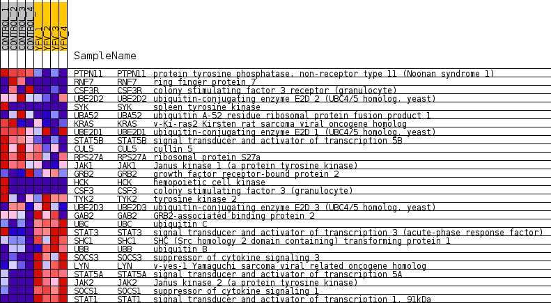
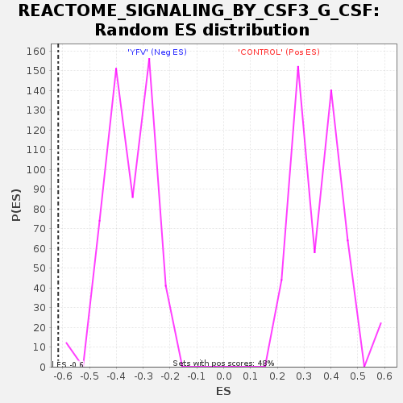

Profile of the Running ES Score & Positions of GeneSet Members on the Rank Ordered List
| Dataset | MATRIZ_GSE99081_collapsed_to_symbols.gsea_CLASE_99081.cls#CONTROL_versus_YFV |
| Phenotype | gsea_CLASE_99081.cls#CONTROL_versus_YFV |
| Upregulated in class | YFV |
| GeneSet | REACTOME_SIGNALING_BY_CSF3_G_CSF |
| Enrichment Score (ES) | -0.6165023 |
| Normalized Enrichment Score (NES) | -1.7335063 |
| Nominal p-value | 0.0 |
| FDR q-value | 0.027520984 |
| FWER p-Value | 0.315 |
| SYMBOL | TITLE | RANK IN GENE LIST | RANK METRIC SCORE | RUNNING ES | CORE ENRICHMENT | |
|---|---|---|---|---|---|---|
| 1 | PTPN11 | protein tyrosine phosphatase, non-receptor type 11 (Noonan syndrome 1) | 389 | 0.883 | 0.0163 | No |
| 2 | RNF7 | ring finger protein 7 | 532 | 0.814 | 0.0448 | No |
| 3 | CSF3R | colony stimulating factor 3 receptor (granulocyte) | 756 | 0.718 | 0.0638 | No |
| 4 | UBE2D2 | ubiquitin-conjugating enzyme E2D 2 (UBC4/5 homolog, yeast) | 1041 | 0.634 | 0.0753 | No |
| 5 | SYK | spleen tyrosine kinase | 1865 | 0.499 | 0.0473 | No |
| 6 | UBA52 | ubiquitin A-52 residue ribosomal protein fusion product 1 | 1969 | 0.488 | 0.0632 | No |
| 7 | KRAS | v-Ki-ras2 Kirsten rat sarcoma viral oncogene homolog | 1980 | 0.487 | 0.0849 | No |
| 8 | UBE2D1 | ubiquitin-conjugating enzyme E2D 1 (UBC4/5 homolog, yeast) | 2350 | 0.433 | 0.0819 | No |
| 9 | STAT5B | signal transducer and activator of transcription 5B | 3043 | 0.337 | 0.0546 | No |
| 10 | CUL5 | cullin 5 | 3755 | 0.262 | 0.0227 | No |
| 11 | RPS27A | ribosomal protein S27a | 4134 | 0.232 | 0.0100 | No |
| 12 | JAK1 | Janus kinase 1 (a protein tyrosine kinase) | 5037 | 0.156 | -0.0385 | No |
| 13 | GRB2 | growth factor receptor-bound protein 2 | 6017 | 0.074 | -0.0955 | No |
| 14 | HCK | hemopoietic cell kinase | 7242 | 0.000 | -0.1710 | No |
| 15 | CSF3 | colony stimulating factor 3 (granulocyte) | 7438 | 0.000 | -0.1830 | No |
| 16 | TYK2 | tyrosine kinase 2 | 10673 | -0.073 | -0.3792 | No |
| 17 | UBE2D3 | ubiquitin-conjugating enzyme E2D 3 (UBC4/5 homolog, yeast) | 12453 | -0.238 | -0.4780 | No |
| 18 | GAB2 | GRB2-associated binding protein 2 | 13339 | -0.343 | -0.5170 | No |
| 19 | UBC | ubiquitin C | 14182 | -0.479 | -0.5470 | No |
| 20 | STAT3 | signal transducer and activator of transcription 3 (acute-phase response factor) | 15310 | -0.748 | -0.5823 | Yes |
| 21 | SHC1 | SHC (Src homology 2 domain containing) transforming protein 1 | 15452 | -0.806 | -0.5542 | Yes |
| 22 | UBB | ubiquitin B | 15642 | -0.918 | -0.5239 | Yes |
| 23 | SOCS3 | suppressor of cytokine signaling 3 | 15669 | -0.939 | -0.4826 | Yes |
| 24 | LYN | v-yes-1 Yamaguchi sarcoma viral related oncogene homolog | 15921 | -1.332 | -0.4372 | Yes |
| 25 | STAT5A | signal transducer and activator of transcription 5A | 15943 | -1.404 | -0.3744 | Yes |
| 26 | JAK2 | Janus kinase 2 (a protein tyrosine kinase) | 16053 | -1.843 | -0.2969 | Yes |
| 27 | SOCS1 | suppressor of cytokine signaling 1 | 16143 | -2.593 | -0.1839 | Yes |
| 28 | STAT1 | signal transducer and activator of transcription 1, 91kDa | 16215 | -4.153 | 0.0015 | Yes |

